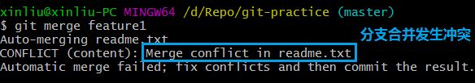

Git把每次的提交串成一条时间线（分支）。新建仓库不切换分支时，提交到master主分支上。HEAD严格来说不是指向提交，而是指向master，master才是指向提交的。所以，HEAD指向的就是当前分支。
① 新建并切换到feature1分支，修改readme.txt最后一行。
② 切换回master分支，修改readme.txt最后一行。
现在，master分支和feature1分支各自都分别有新的提交，变成了这样：
③ 合并feature1分支到master分支。

合并冲突了！Git提示readme.txt文件存在冲突，必须手动解决冲突后再提交。git status也可以告诉我们冲突的文件：
④ 查看冲突文件readme.txt，解决冲突后，再提交，合并完成。
现在，master分支和feature1分支变成了下图所示：

执行git log --graph --pretty=oneline --abbrev-commit查看分支合并情况：
⑤ 删除feature1分支：git branch -d feature1。